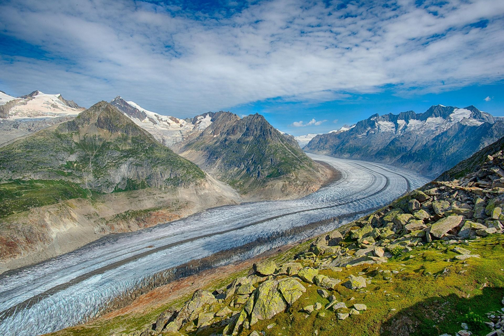

| term | Definition |
|---|---|
| Deprecated | A software feature, tool or element that happens to be outdated and not recommended for use. |
| Responsive Design | Web approach to allow website layouts and images to automatically adjust to fit to screens of any size |
| User Experience | The focus of feel for how a person interacts with a system or product and how it is experienced. |
Working With Images

The PNG format is a lossless compression with a larger file size. PNG images files contain every pixel resulting in a sharper image compareable to other formats. PNG images have higher contrast with more details.

The JPG format is a lossy compression with s smaller file size that group pixels together to help reduce file size. As a result, images may appear more blotchy or fuzzy and some quality is lost to save space.